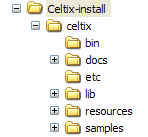
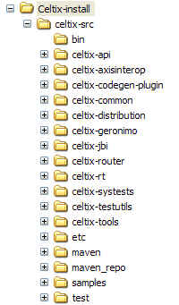

Celtix Installation Guide
Table of Contents
You can download a Celtix distribution from the Celtix project page on the ObjectWeb site: http://forge.objectweb.org/projects/celtix.
Celtix is provided as an extractable JAR file. You can select either a source or binary distribution. Each distribution is also provided under two licensing agreements:
Eclipse Public License (EPL)
Lesser General Public License (LGPL)
The available JAR files are as follows:
|
Distribution |
EPL |
LGPL |
|---|---|---|
|
Source |
celtix-1.0-src-epl.jar |
celtix-1.0-src-lgpl.jar |
|
Binary |
celtix-1.0-bin-epl.jar |
celtix-1.0-bin-lgpl.jar |
Download the version that best suits your needs. Users interested in running the product samples and/or writing Celtix applications should select the binary distribution. Users interested in reviewing the source code, and perhaps contributing to the Celtix project, might choose to use the source distribution.
Before installing Celtix 1.0, you must ensure that you have the following product versions installed:
JDK 1.5.0_06 (JDK 5.0 update 6) and above. Celtix requires this version of the JDK for compilation and execution.
Apache Ant 1.6.5 and above. Ant is optionally used to compile and execute Celtix applications. It is also possible to compile and run Celtix applications using javac and java directly. For further information on this alternative approach, see the discussion in each sample application's README file.
You must install the J2SE Development Kit (JDK) 5.0, which can be downloaded from the following location:
After installing the JDK, set or modify the following environment variables:
JAVA_HOME — set this to point at the root directory of the JDK 5.0 installation.
PATH — ensure that your PATH includes the %JAVA_HOME%\bin directory (Windows) or $JAVA_HOME/bin directory (UNIX).
Each Celtix sample application includes a build.xml file that enables you to use Apache Ant to compile and run the application. If you wish to use this feature, you must install the Apache Ant 1.6 build utility, which can be downloaded from the following location:
After installing Apache Ant, add the AntInstallDir/bin (Windows) or AntInstallDir/bin (UNIX) directory to your PATH. Place this at the start of your PATH if previous versions of Ant may be configured by other products on your PATH.
In addition, the source distribution of Celtix uses Apache Maven to build the Celtix binaries. A Maven installation is provided with the source distribution. For more details, see Installing and Building the Celtix Source Distribution.
You can install Celtix on any operating system that supports the Java 5 platform.
To install either of the binary distributions (EPL or LGPL), perform the following steps:
Download the distribution file to a local directory.
Create an installation directory, (for example, Celtix-install).
Open a command window and move to the installation directory. Confirm that the %JAVA_HOME%\bin (Windows) or $JAVA_HOME/bin (UNIX) directory is on the PATH.
Use the java executable to extract the archive, for example:
The extraction process will create the following directory structure:

To build Celtix from the source distribution, you must have an active Internet connection. This is because Apache Maven will attempt to download various artifacts from a public repository at http://www.ibiblio.org/. If you wish to become an active contributor to the Celtix project and need to frequently rebuild your Celtix installation, you may find it convenient to either use a public mirror repository, or to set up your own local repository.
For more information, see: http://maven.apache.org/guides/mini/guide-mirror-settings.html and https://wiki.objectweb.org/celtix/Wiki.jsp?page=Maven2Information.
To install and build either of the source distributions (EPL or LGPL), perform the following steps:
Download the distribution file to a local directory.
Create an installation directory, (for example, Celtix-install).
Open a command window and move to the installation directory. Confirm that the %JAVA_HOME%\bin (Windows) or $JAVA_HOME/bin (UNIX) directory is on the PATH.
Use the java executable to extract the archive, for example:
java -jar path_to_Celtix_source_distribution
The extraction process creates the following directory structure:

To
build Celtix, you must set your environment for Apache Maven.
Ensure that the following environment variables are set:
|
Environment Variable |
Value |
|---|---|
|
JAVA_HOME |
JDK installation directory (for example, C:\jdk1.5) |
|
CELTIX_INSTALL |
Celtix installation directory (for example, C:\Celtix-install) |
|
CLASSPATH |
<empty> |
|
MAVEN_HOME |
|
|
MAVEN_OPTS |
|
|
PATH |
|
Move to the celtix-src directory under your Celtix installation directory.
To build Celtix, enter the following command:
This command builds the product and runs all of the system and unit tests. To avoid running the tests, use the following command:
Move to the subdirectory
celtix-src\celtix-distribution
(Windows) or
celtix-src/celtix-distribution
(UNIX), and enter the following command:
Alternatively, you can build JAR files suitable for distribution using the following command:
The JAR files are located in the following directory: celtix-src\celtix-distribution\target (Windows) or celtix-src\celtix-distribution\target (UNIX).
To test the installation of Celtix, try running the basic Hello World sample application, or any of the other samples.
Before you can compile and run the sample applications, you must set the environment so that the directories holding the Celtix, Java, and Ant utility applications are on the PATH.
Open a command window, and move to the samples subdirectory under your Celtix installation. Ensure that the following environment variables are set. If you will be using the Ant build system exclusively, the celtix.jar file does not need to be included in the CLASSPATH variable. You may find it convenient to write a script or batch file that sets these environment variables.
|
Environment Variable |
Value |
|---|---|
|
JAVA_HOME |
JDK installation directory (for example, C:\jdk1.5) |
|
CELTIX_HOME |
Celtix installation directory (for example, C:\Celtix-install\celtix) |
|
CLASSPATH |
|
|
ANT_HOME |
|
|
PATH |
|
Before you can compile and run the sample applications, you must set the environment so that the directories holding the Celtix, Java, and Ant utility applications are on the PATH.
Open a command window and move to the samples subdirectory under your Celtix installation. Ensure that the following environment variables are set (note the different value for the CELTIX_HOME variable). When using the source distribution, you should use the Ant build system; with this version of the product the Celtix product JAR files are distributed throughout the product directories, and providing an accurate CLASSPATH would be challenging.
You may find it convenient to write a script or batch file that sets these environment variables.
|
Environment Variable |
Value |
|---|---|
|
JAVA_HOME |
JDK installation directory (for example, C:\jdk1.5) |
|
CELTIX_HOME |
Celtix installation directory (for example,
|
|
CLASSPATH |
|
|
ANT_HOME |
|
|
ANT_ARGS |
|
|
PATH |
|
To build and run the Hello World application, perform the following steps:
Open a command window, and ensure that your environment is set.
Change directory to %CELTIX_HOME%\samples\hello_world (Windows) or $CELTIX_HOME/samples/hello_world (UNIX).
Enter the ant build command to build both the client and server applications.
Open a new command window and set the environment.
Change directory to %CELTIX_HOME%\samples\hello_world (Windows) or $CELTIX_HOME/samples/hello_world (UNIX).
Enter the ant server command.
In the first command window, enter the ant client command.